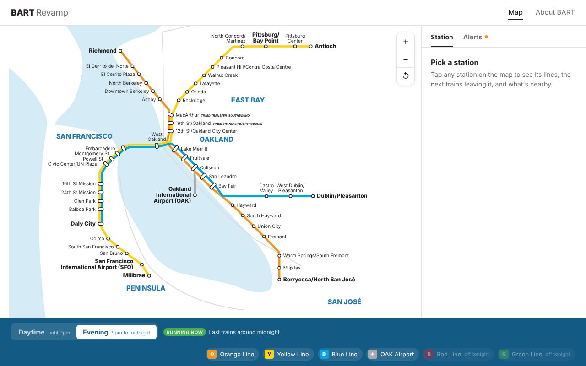

Match the official map, don't reinvent it
Layout


Because: the official map is already in riders' heads. My job was to make it more useful, not more mine.
I'm a Bay Area native, and BART is how I've always gotten around home. So I redesigned its system map as an interactive site that keeps the official look riders already know, then lets you spotlight a single line, see live trains and switch to evening service.
Why "Karl"? Karl is the unofficial name locals gave San Francisco's famous fog. Every good train needs a friend, and Bart's has been rolling in over the bay for as long as I can remember.
The official map shows every line at once. Following one route, or knowing what runs after 9pm, takes effort.
A map in the official style where you spotlight one line, tap a station for live departures, and the whole site changes for evening service.
Matching the official map instead of inventing my own layout, so riders don't have to relearn anything.
BART's official map is iconic, but it draws every line at once. If you only care about your train, you have to trace one color through a tangle of others.
Service also changes at night. After 9pm the Red and Green lines stop running and transfers change, but a printed map can't tell you that. Riders find out on the platform.
The goal: keep the map people already trust, and make it answer the question they actually have: where does my train go, right now?
I studied the official system map and BART's service rules closely enough to rebuild them, including the August 2026 schedule, which lines run after 9pm, and where timed transfers happen.
Riders don't need a new map. They need the map they know, filtered to their line and their time of day.
Drag through the real versions from the project's history. Each one fixed something the last one got wrong.
The three choices that shaped the project, with what I gave up for each.
Layout
Because: the official map is already in riders' heads. My job was to make it more useful, not more mine.
Features

Because: trip planning already exists in other apps. Seeing your whole line at a glance didn't.
Evening service


Because: evening service is a different network. A small label is easy to miss; a whole site going dark isn't.
A live site that works on desktop, tablet and phone, built without a framework or build step.
My first, custom version had the most personality. Rebuilding the official layout made it something riders could read in a second.
Removing trip planning made the map clearer than any feature I added.
Watch 5 riders find their route home on the official map and on this one, and time both.
Food, murals, parks and game days near each station, plus station pages with neighborhood history.